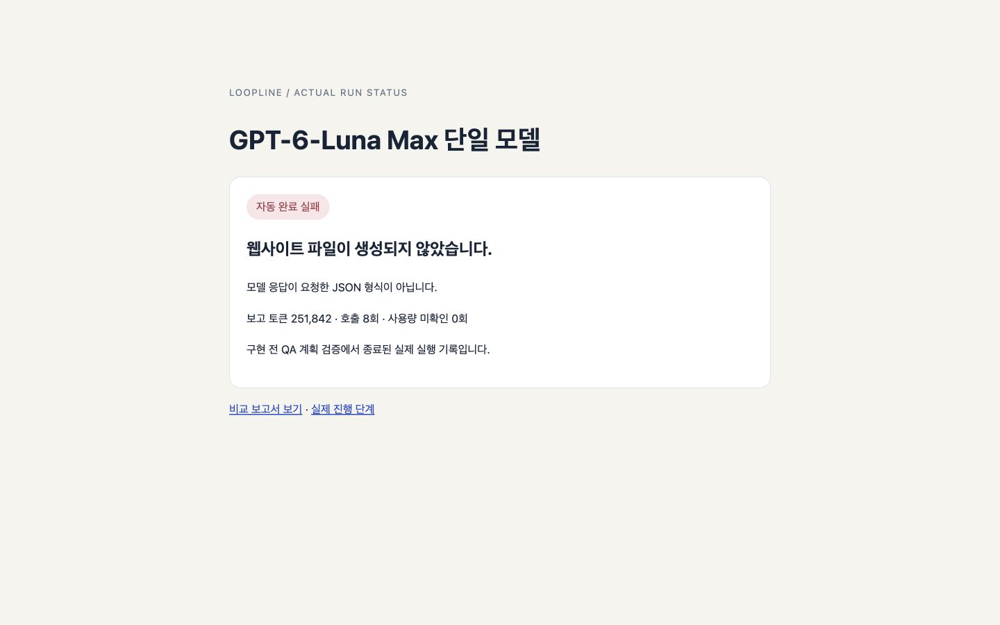
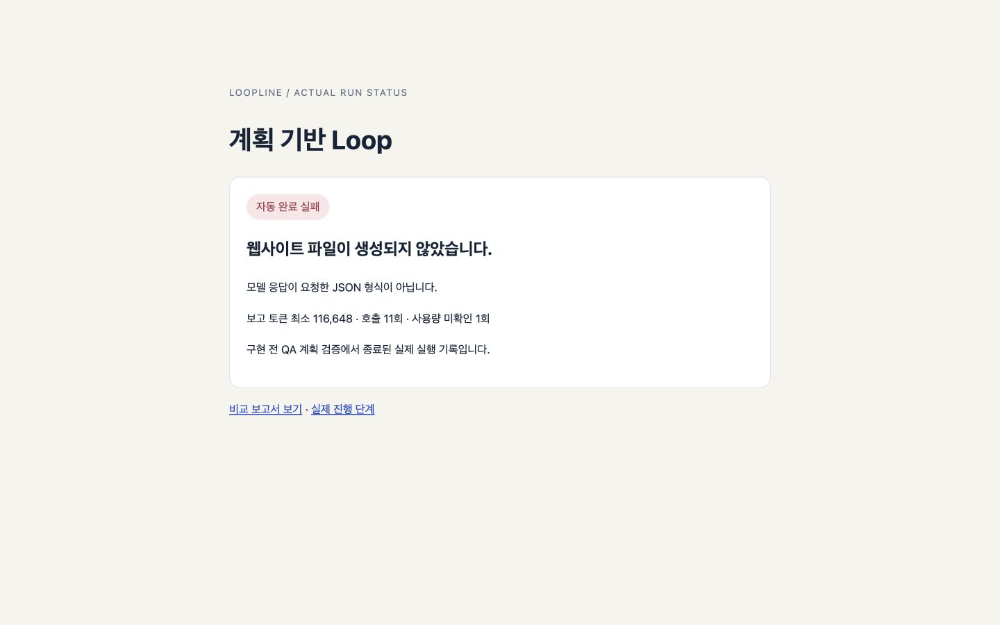

AUTOMATIC COMPLETION
단일 0/1 · Loop 0/1
자체 검증 + 실제 브라우저 QA + 자동 반영
같은 Focus Desk 웹사이트 제작 과제를 동일한 측정 버전의 Harness에서 실행했습니다. GPT-6-Luna Max 고정 실행은 자동 완료하지 못했습니다. 계획 기반 Loop는 자동 완료하지 못했습니다. 공통 외부 QA는 단일 산출물 미완성으로 미실행, Loop 산출물 미완성으로 미실행입니다. 완료된 동일 품질 작업이 없으므로, 토큰과 시간의 차이를 동일 품질 작업의 효율 향상으로 해석할 수 없습니다. 실패한 실행의 소비량도 결과에 포함했습니다.
자체 검증 + 실제 브라우저 QA + 자동 반영
단일 / Loop · 미확인 0 / 1회
동일한 사용자 동작 18개를 사전 확정 · 이번 실행은 미실행
실측 버전 e34846c. 이후 JSON 오류 분류 수정 c40b14f을 현재 앱에 반영했습니다. 수정 후 실제 모델 비교는 재실행하지 않았으며 아래 결과는 수정 전 기록입니다.
| 비교 항목 | GPT-6-Luna Max 단일 Harness | 계획 기반 Loop Harness |
|---|---|---|
| 자동 완료·반영 | 미완료 · 0/1 | 미완료 · 0/1 |
| 공통 외부 QA 포함 최종 기능 완료 | 0/1 미완료 | 0/1 미완료 |
| 실행 시간 | 26분 6.109초 | 6분 28.085초 |
| 보고된 토큰 | 251,842 | 최소 116,648 |
| 모델 호출 | 8회 | 11회 |
| 사용량 미확인 호출 | 0회 | 1회 |
| 자체 전체 검증 | 미실행 · 구현 전 종료 | 미실행 · 구현 전 종료 |
| 자동 독립 브라우저 QA | 미실행 · 구현 전 종료 | 미실행 · 구현 전 종료 |
| 공통 외부 브라우저 QA | 산출물 미완성으로 미실행 | 산출물 미완성으로 미실행 |
| 외부에서 생성 코드 수정 | 0회 | 0회 |
| 외부 중지·이어가기 | 0회 | 0회 |
| 자동 브라우저 QA 실패 회차 | 0회 | 0회 |
| QA 계획 판정 보완 | 2회 | 2회 |
| 계획 반복 실패로 모델 교체 | 0회 | 1회 |
| 응답 형식 자동 보완 | 0회 | 0회 |
| 부분 작업 완료 | 미생성 · 구현 전 종료 | 미생성 · 구현 전 종료 |
| 계획별 자동 모델 배정 | 0회 — 고정 모델 | 0회 |
완료된 동일 품질 작업이 없으므로, 토큰과 시간의 차이를 동일 품질 작업의 효율 향상으로 해석할 수 없습니다. 실패한 실행의 소비량도 결과에 포함했습니다.
단일도 같은 Harness 절차를 사용합니다. Loop만의 구조 효과와 모델 조합의 효과를 분리한 실험은 아닙니다.

실행 실패 안내 화면 · 웹사이트 미생성
산출물 미완성으로 미실행 · 생성 코드 수동 수정 0회

실행 실패 안내 화면 · 웹사이트 미생성
산출물 미완성으로 미실행 · 생성 코드 수동 수정 0회
추가한 선택 로직은 현재 부분의 담당 파일, 의존 관계, 완료 기준, 고정 QA와 실제 실패 근거를 판단에 전달하도록 구현했습니다. 같은 계획은 저장한 결정을 재사용합니다. 고정 모델을 자동 변경하지 않습니다.
| 방식 | 역할 | 요청 모델 | Effort | 호출 | 보고 토큰 | 미확인 | 호출 시간 합계 |
|---|---|---|---|---|---|---|---|
| 단일 | planner | gpt-6-luna | max | 5회 | 172,257 | 0회 | 24분 45.318초 |
| 단일 | judge | gpt-6-luna | max | 3회 | 79,585 | 0회 | 1분 20.118초 |
| Loop | judge | jev-latest | 서비스 기본값 | 4회 | 17,678 | 0회 | 0분 1.270초 |
| Loop | planner | models/gemini-3-flash-preview | 서비스 기본값 | 4회 | 11,805 | 1회 | 0분 46.702초 |
| Loop | planner | gpt-6-luna | high | 2회 | 58,277 | 0회 | 3분 49.621초 |
| Loop | planner | gpt-6-sol | high | 1회 | 28,888 | 0회 | 1분 49.672초 |
공급자별 토큰과 캐시 기준이 다릅니다. 달러 비용이나 내부 연산량으로 환산하지 않았습니다.
| 방식 | 단계 | 호출 | 보고 토큰 | 미확인 | 모델 시간 합계 |
|---|---|---|---|---|---|
| 단일 | 구현 전 계획·QA 계약·판정 | 8회 | 251,842 | 0회 | 26분 5.436초 |
| Loop | 구현 전 계획·QA 계약·판정 | 11회 | 116,648 | 1회 | 6분 27.265초 |
| 번호 | 공통 검사 | 단일 | Loop |
|---|---|---|---|
| 1 | 처음 시작 시 실제 빈 상태와 작업 0개 표시 | 미실행 | 미실행 |
| 2 | 공백 입력 거부와 안내 | 미실행 | 미실행 |
| 3 | 추가 버튼으로 앞뒤 공백을 정리한 작업 추가 | 미실행 | 미실행 |
| 4 | Enter로 두 번째 작업 추가 | 미실행 | 미실행 |
| 5 | 동일 제목 두 작업의 독립 생성 | 미실행 | 미실행 |
| 6 | 지정 작업 완료 처리와 개수 갱신 | 미실행 | 미실행 |
| 7 | 완료 취소와 개수 갱신 | 미실행 | 미실행 |
| 8 | 전체·할 일·완료 필터의 항목과 aria-pressed | 미실행 | 미실행 |
| 9 | 제목 검색 즉시 반영 | 미실행 | 미실행 |
| 10 | 검색과 완료 필터 동시 적용 | 미실행 | 미실행 |
| 11 | 검색 결과 없음 안내 | 미실행 | 미실행 |
| 12 | 새로고침 후 목록과 완료 상태 복원 | 미실행 | 미실행 |
| 13 | 중복 제목 중 하나만 삭제 | 미실행 | 미실행 |
| 14 | 마지막 항목 삭제 후 실제 빈 상태 복귀 | 미실행 | 미실행 |
| 15 | HTML 형태의 제목을 문자로 표시 | 미실행 | 미실행 |
| 16 | 동작 결과를 라이브 status 영역에 표시 | 미실행 | 미실행 |
| 17 | Tab/Enter 조작과 현재 포커스 표시 | 미실행 | 미실행 |
| 18 | 긴 제목을 포함한 모바일·데스크톱 가로 넘침 없음 | 미실행 | 미실행 |
세 진단 단계에서는 두 구성 모두 구현 전 실패했습니다. QA 분류·단계 수 안내, 계획 반복 실패 시 모델 교체, 판정과 포커스·화면 검사의 실행 조건을 보완한 뒤 동일한 측정 버전의 엔진으로 양쪽을 새로 실행했습니다. 이 엔진 보완은 별도의 개입입니다.
| 첫 진단 | 결과 | 시간 | 보고 토큰 | 실패 지점 |
|---|---|---|---|---|
| 단일 Luna Max | 미완료 · 구현 시작 전 | 6분 43.924초 | 128,855 | QA 분류 검증 후 JSON 형식 복구 실패 |
| Loop | 미완료 · 구현 시작 전 | 3분 53.712초 | 131,837 | QA 계획은 복구했지만 부분 작업 계획 3회 판정 실패 |
첫 보완 뒤 재시도 역시 실패했습니다.
| 두 번째 진단 | 결과 | 시간 | 보고 토큰 | 실패 지점 |
|---|---|---|---|---|
| 단일 Luna Max | 미완료 · 구현 시작 전 | 7분 13.620초 | 133,003 | QA 검사당 단계 수 초과가 형식 재요청 후에도 반복 |
| Loop | 미완료 · 구현 시작 전 | 1분 27.086초 | 39,498 | QA 계획을 같은 계획 모델로 3회 보완했지만 판정 미통과 |
세 번째 진단에서 드러난 검사 실행기와 판정 정보의 불일치도 반영했습니다.
| 세 번째 진단 | 결과 | 시간 | 보고 토큰 | 실패 지점 |
|---|---|---|---|---|
| 단일 Luna Max | 미완료 · 구현 시작 전 | 16분 17.587초 | 253,366 | 판정이 포커스 스타일과 화면 넘침 검사를 요구했으나 검사 프로토콜에 누락 |
| Loop | 미완료 · 구현 시작 전 | 6분 45.740초 | 143,114 | 기본 동작 판정은 통과했으나 전체 QA 범위 판정 실패 |
여섯 진단 실행의 보고 토큰 합계: 829,673. 최적화 실험의 비용이며 마지막 비교 실행과 구분합니다.
최신 실행 중 생성 코드 수정과 수동 이어가기는 0회입니다. 초기 실패까지 포함한 전체 과정의 개입이 0회였다는 의미는 아닙니다. 실제 사람의 작업 시간을 계측하지 않아 공수를 분 단위로 추정하지 않습니다.
JSON 파싱 실패가 일반 오류로 분류돼 기존 형식 보완과 다음 후보 전환이 실행되지 않았습니다. 오류 분류를 수정하고 고정 모델 재요청·자동 후보 전환·반복 실패 시 반영 차단을 검증했습니다. 현재 앱 a792569에 적용됐으며 실제 모델 재비교는 미실행입니다.
기존 QA 검사와 selector를 보존하며 누락된 확인 항목만 추가하는 계획 복구가 우선입니다. 이번에는 전체 계획을 다시 생성하면서 이전 검사가 빠졌고, 마지막 JSON 검증도 실패했습니다. 실제 원본 응답을 비밀정보 없이 진단할 수 있는 기록도 필요합니다. 현재 비용 차이를 완성물 성능 개선으로 해석하지 않습니다.
실측 엔진 e34846c은 205개 검사 통과. 현재 수정 버전 a792569은 아래 회귀 검증을 통과했습니다. 두 버전의 결과를 구분합니다.